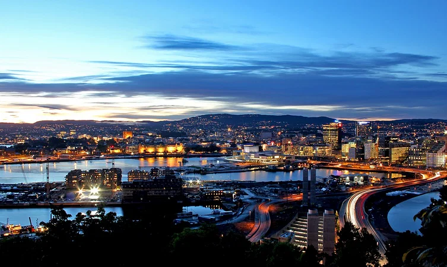

|
HOME | ABOUT | DESTINATION | CONTACT US |
|---|
 |
BergenNestled on the southwest coast of Norway, the city of Bergen prides in its beautiful wharfs, charming neighborhoods, and deep fjords. Embraced by a series of mountains on all sides, the idyllic charm of Bergen has made it one of the most popular tourist spots in Europe. The second largest city in Norway, Bergen has been designated a UNESCO World Heritage Site, owing to its unparalleled beauty. 👈️CLICK THE IMAGE FOR MORE DETAILS |
|---|---|
OsloOslo is the capital of Norway. This is popular for its Viking history, culture, and traditions. There are many international museums here that provide natural beauty. There are many places for walking and hiking trails in this city. You can hike in the forests, lakes, and many other hiking spots in and around the city. This city is popular for its nightlife. CLICK THE IMAGE FOR MORE DETAILS👉️ |
 |
 |
MoldeLocated in the traditional Romsdal district of Norway, Molde is a fairly charming and unexplored city in the Scandinavian region. The town is fondly dubbed as the ‘Town of Roses’ by the locals here, owing to the luxuriant rose gardens that fill up the city on all sides. With its roses blooming through a better part of the year, this fjord city prides in its almost ethereal beauty. The surrounding snow-clad peaks that surround Molde add to the heavenly charm of the place. 👈️CLICK THE IMAGE FOR MORE DETAILS |
DrammenLocated west of the Oslofjord, Drammen is one of the bustling Norway tourist places offering an array of thrilling adventures, biking excursions, skiing, or ravine expeditions. The city is located on the shores of the pristine Drammenselva River that is famous for salmon fishing. Replete with urban vibes this city is a hub of shopping places, restaurants, cafes, bars, and offers a freakish ambiance of the city across the most famous & lively pathway beside the Drammenselva River. CLICK THE IMAGE FOR MORE DETAILS👉️ |
 |
 |
TromsoSituated right atop the Arctic Circle, the city of Tromso is a major cultural hub in Norway. Regarded as one of the best spots for viewing the Northern Lights, Tromso is flocked by tourists throughout the year. Boasting of a rustic, old-school charm, Tromso is well known for its characteristic centuries old wooden houses that scatter the city. The stunning skyline here, punctured by the greenish blue colors of the aurora for most of the year, is dominated by the stained glass steeple of the famed Arctic Cathedral. 👈️CLICK THE IMAGE FOR MORE DETAILS |